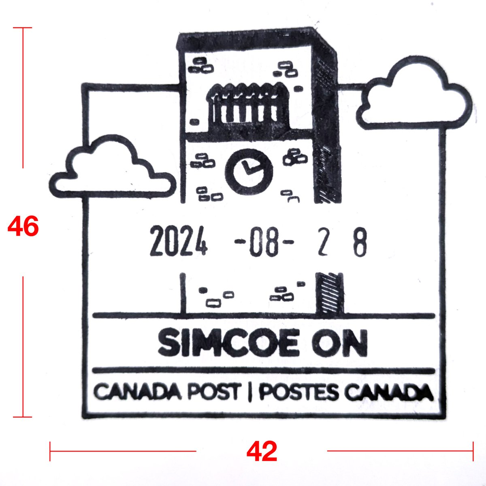

Simcoe PO pictorial cancel
War Memorial Carillon Tower
- Status
- Active
- Run dates
- 2024-01-01 to present
- Design
- War Memorial Carillon Tower
- Ink colour
- Black
- Designer
- Unknown
- Post office
- Simcoe PO
124 Norfolk St North
Simcoe, ON
N3Y 0A0 - Subjects
- architecture, building, war memorial, history
Collect it by mail. Send your stamped covers, with a stamped return envelope, to the post office address above. How to collect pictorial cancels by mail · en français
 Waterford POBLACK BRIDGE / WATERFORD HERITAGE TRAIL
Waterford POBLACK BRIDGE / WATERFORD HERITAGE TRAIL Hagersville POFARMERS MARKET / EST 1897
Hagersville POFARMERS MARKET / EST 1897 Otterville POOtterville Mill Established 1845
Otterville POOtterville Mill Established 1845 Port Rowan POFrog
Port Rowan POFrog Port Rowan POBird
Port Rowan POBird